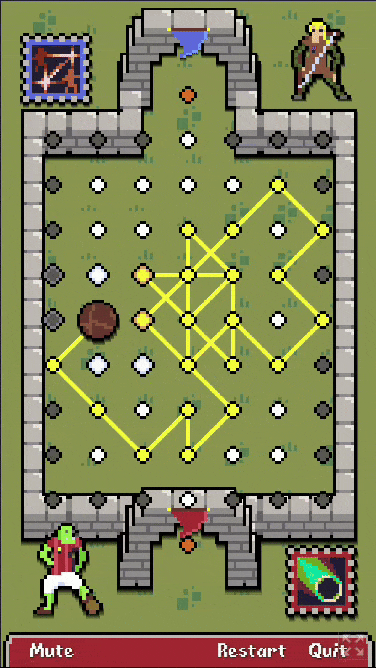
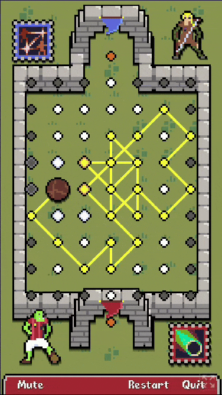
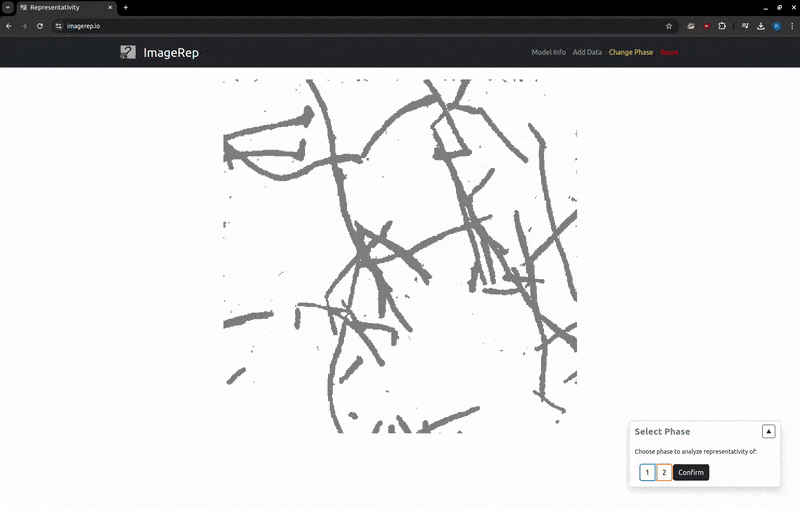

Ronan Docherty
About:
I'm a graduate from Imperial College London with a Master's degree in Physics who is currently doing a PhD in machine learning for materials science with the TLDR group at Imperial. I also work part-time at Polaron, a materials analysis & design startup. I enjoy puzzles, programming and making kitsch webapps.
Personal Projects:
 


Academic Projects:


ChiraSnap: a cheap, compact circularly polarised imaging
system. Contains code and instructions for building the physical
camera (including .stl files for the casing).
Publications and preprints:
- A. Dahari, R. Docherty, S. Kench, S. J. Cooper, 'Prediction of microstructural representativity from a single image', arXiV preprint, 2024
- R. Docherty, A. Vamvakeros, S. J. Cooper, 'Upsampling DINOv2 features for unsupervised vision tasks and weakly supervised materials segmentation', NeurIPS, AI4Mat Workshop, 2024
- G. Lei†, R. Docherty†, S. J. Cooper, 'Materials science in the era of large language models: a perspective', RSC Digital Discovery, 2024
- R. Docherty, I. Squires, A. Vamvakeros, S. J. Cooper, 'SAMBA: A Trainable Segmentation Web-App with Smart Labelling', JOSS, 2024
- M. D. Ward†, R. Docherty†, L. Minion, X. Shi, K. Anson, G. Siligardi, J. Nelson, J. Wade, M. J. Fuchter, 'Development of low-cost, compact chiroptical imaging systems', RSC Nanoscale, 2024
Skills:
-
Python
- Libraries: numpy, scipy, scikit-learn, pandas, flask, etc.
- Tooling: ruff, black, mypy
- (Automated) CI/CD
- Machine learning: random forests, PyTorch, CNNs, vision transformers, (L)LMs
- Computer vision: scikit-image, kornia, feature extraction
- Game dev: Godot, Phaser.js
- Web dev: Javascript, Typescript, React (JSX, TSX), some VueJS
- Some lower-level experience, including C, FORTH, Assembly
- Physics and materials-science background, with some lab experience
- Master's student supervision; marking
Achievements:
- Polaron wins the Government's £1M AI prize
- Winner (Best educational hack) IC Hack 2020; Runner up at Oxford Hack 2019
- Best feature article, RSCU Science Challenge 2019
- Extracurricular university courses: pass with merit in French (CEFR-B1) and pass with distintion in creative writing
- National Citizenship Service Award